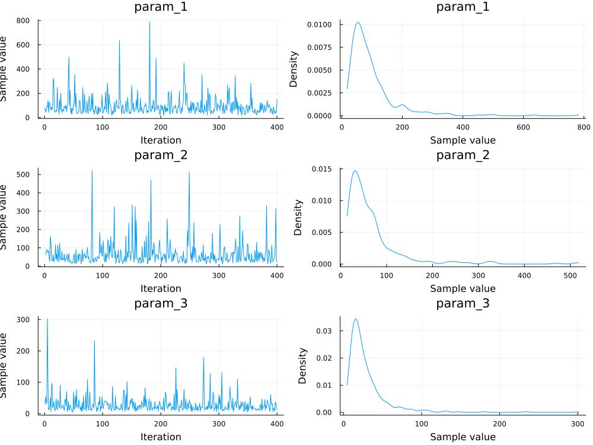

PBLUP
using CSV, StatsModels, DataFrames, NextGPdata = CSV.read("YOURPATH/phenotypes.csv",DataFrame)ID Sire Dam Herds Pen BW
QGG5 QGG1 QGG2 1 1 35.0
QGG6 QGG3 QGG2 1 2 20.0
QGG7 QGG4 QGG6 1 2 25.0
QGG8 QGG3 QGG5 1 1 40.0
QGG9 QGG1 QGG6 2 1 42.0
QGG10 QGG3 QGG2 2 2 22.0
QGG11 QGG3 QGG7 2 2 35.0
QGG12 QGG8 QGG7 3 2 34.0
QGG13 QGG9 QGG2 3 1 20.0
QGG14 QGG3 QGG6 3 2 40.0pedigree = "YOURPATH/pedigreeBase.txt""YOURPATH/pedigreeBase.txt"#Pedigree for the above example
QGG1 0 0
QGG2 0 0
QGG3 0 0
QGG4 0 0
QGG5 QGG1 QGG2
QGG6 QGG3 QGG2
QGG7 QGG4 QGG6
QGG8 QGG3 QGG5
QGG9 QGG1 QGG6
QGG10 QGG3 QGG2
QGG11 QGG3 QGG7
QGG12 QGG8 QGG7
QGG13 QGG9 QGG2
QGG14 QGG3 QGG6f = @formula(BW ~ Herds + Pen + PED(ID) + PED(Dam) + (1|Dam))FormulaTerm
Response:
BW(unknown)
Predictors:
Herds(unknown)
Pen(unknown)
(ID)->PED(ID)
(Dam)->PED(Dam)
(Dam)->1 | DammyHints = Dict(:Dam => StatsModels.FullDummyCoding(),
:ID => StatsModels.FullDummyCoding(),
:Herds => StatsModels.DummyCoding(),
:Pen => StatsModels.FullDummyCoding())blk = [(:Herds,:Pen)]priorVar = Dict(:ID => Random("A",150.0),
:Dam => Random("A",90.0),
:(1|Dam) => Random("I",40.0),
:e => Random("I",350.0));@time runLMEM(f,data,100000,10000,10;myHints=myHints,blockThese=blk,VCV=priorVar,userPedData=pedigree)Output folder outMCMC exists. Removing its content
---------------- Summary of input ----------------
|Variable Term Type Levels
|----------|------|-----------------|--------|
| Herds | Term | Matrix{Float64} | 2 |
| Pen | Term | Matrix{Float64} | 2 |
| ID | PED | Matrix{Bool} | 14 |
| Dam | PED | Matrix{Bool} | 14 |
| 1 | Dam | | | Matrix{Float64} | 4 |
prior var-cov structure for "e" is either empty or "I" was given. An identity matrix will be used
prior var-cov structure for ID is A. Computed A matrix (from pedigree file) will be used
prior var-cov structure for Dam is A. Computed A matrix (from pedigree file) will be used
prior var-cov structure for 1 | Dam is either empty or "I" was given. An identity matrix will be used
---------------- Summary of analysis ----------------
|Effect Type Str df scale
|---------|--------|-----|-----|-------|
| ID | Random | A | 4.0 | 75.0 |
| Dam | Random | A | 4.0 | 45.0 |
| 1 | Dam | Random | I | 4.0 | 20.0 |
| e | Random | I | 4.0 | 175.0 |
MCMC progress... 100%|███████████████████████████████████| Time: 0:00:10summaryMCMC("b",summary=true,plots=true)Chains MCMC chain (8000×4×1 Array{Float64, 3})
Iterations = 1:1:8000
Number of chains = 1
Samples per chain = 8000
parameters = param_1, param_2, param_3, param_4
Summary Statistics
mean std naive_se mcse ess rhat
Herds: 2 2.9484 9.4992 0.1062 0.0827 8391.5601 0.9999
Herds: 3 1.3915 9.5492 0.1068 0.0892 7767.5043 0.9999
Pen: 1 34.3564 8.1242 0.0908 0.0848 7675.1957 1.0002
Pen: 2 28.3365 7.8279 0.0875 0.0858 8028.2897 0.9999...............

summaryMCMC("u1",summary=true)Chains MCMC chain (8000×14×1 Array{Float64, 3}):
Iterations = 1:1:8000
Number of chains = 1
Samples per chain = 8000
parameters = QGG1, QGG2, QGG3, QGG4, QGG5, QGG6, QGG7, QGG8, QGG9, QGG10, QGG11, QGG12, QGG13, QGG14
Summary Statisticsmean std naive_se mcse ess rhat QGG1 0.1254 11.9068 0.1331 0.1389 7828.8237 1.0000 QGG2 0.2116 12.0017 0.1342 0.1291 7096.3864 0.9999 QGG3 -0.3485 11.9102 0.1332 0.1412 6077.3864 1.0000 QGG4 0.0279 12.0518 0.1347 0.1434 7934.9650 0.9999 QGG5 0.1145 11.9358 0.1334 0.1330 7300.8122 0.9999 QGG6 -0.2125 11.8995 0.1330 0.1605 5459.2267 0.9999 QGG7 -0.0286 11.9567 0.1337 0.1546 6680.3175 0.9999 QGG8 -0.2941 11.9379 0.1335 0.1491 6223.7738 0.9999 QGG9 -0.0297 11.9729 0.1339 0.1507 6958.0547 0.9999 QGG10 0.1501 12.2363 0.1368 0.1487 6606.2058 1.0002 QGG11 -0.4321 12.5107 0.1399 0.1626 6010.4641 0.9999 QGG12 -0.3155 12.6299 0.1412 0.1480 6345.5939 0.9999 QGG13 0.1471 12.6898 0.1419 0.1537 6885.6466 1.0001 QGG14 -0.4522 13.3013 0.1487 0.1533 5745.0079 1.0002
................
summaryMCMC("u2",summary=true)Chains MCMC chain (8000×14×1 Array{Float64, 3}):
Iterations = 1:1:8000
Number of chains = 1
Samples per chain = 8000
parameters = QGG1, QGG2, QGG3, QGG4, QGG5, QGG6, QGG7, QGG8, QGG9, QGG10, QGG11, QGG12, QGG13, QGG14
Summary Statistics
mean std naive_se mcse ess rhat
QGG1 0.2845 9.7671 0.1092 0.1090 7660.3932 0.9999
QGG2 0.0801 9.5525 0.1068 0.1122 6419.0680 0.9999
QGG3 0.1054 9.6939 0.1084 0.1109 6730.4660 1.0001
QGG4 -0.1448 9.9754 0.1115 0.1167 8133.3425 1.0002
QGG5 0.1717 9.7937 0.1095 0.0992 7636.0981 1.0001
QGG6 0.1584 10.1759 0.1138 0.1173 5843.4340 1.0001
QGG7 -0.0678 10.1481 0.1135 0.1168 7298.2993 1.0000
QGG8 0.1058 9.6432 0.1078 0.1076 6929.5482 1.0004
QGG9 0.1263 9.9479 0.1112 0.1086 7117.7557 0.9999
QGG10 0.1700 9.6349 0.1077 0.1196 6341.8787 1.0000
QGG11 0.0834 10.7440 0.1201 0.1209 6967.0154 0.9999
QGG12 0.0136 10.3566 0.1158 0.1080 7444.4081 1.0004
QGG13 0.0016 10.5227 0.1176 0.1207 7383.4325 0.9999
QGG14 0.1844 11.0330 0.1234 0.1306 6510.7092 1.0000.................
summaryMCMC("u3",summary=true)Chains MCMC chain (8000×4×1 Array{Float64, 3}):
Iterations = 1:1:8000
Number of chains = 1
Samples per chain = 8000
parameters = QGG2, QGG6, QGG5, QGG7
Summary Statistics
mean std naive_se mcse ess rhat
QGG2 -3.6740 4.7698 0.0533 0.0571 7587.9118 0.9999
QGG6 0.9639 5.1362 0.0574 0.0633 7964.1691 1.0000
QGG5 1.4677 4.5853 0.0513 0.0563 7825.3578 0.9999
QGG7 1.1952 4.9186 0.0550 0.0531 8145.7314 1.0002.................
summaryMCMC("varU1",summary=true)Chains MCMC chain (8000×1×1 Array{Float64, 3}):
Iterations = 1:1:8000
Number of chains = 1
Samples per chain = 8000
parameters = ID
Summary Statistics
mean std naive_se mcse ess rhat
ID 144.3258 202.9323 2.2689 3.0853 4474.0927 1.0011.................
summaryMCMC("varU2",summary=true)Chains MCMC chain (8000×1×1 Array{Float64, 3}):
Iterations = 1:1:8000
Number of chains = 1
Samples per chain = 8000
parameters = Dam
Summary Statisticsmean std naive_se mcse ess rhat Dam 94.7904 177.7411 1.9872 3.2408 3243.1549 1.0006
................
summaryMCMC("varU3",summary=true)Chains MCMC chain (8000×1×1 Array{Float64, 3}):
Iterations = 1:1:8000
Number of chains = 1
Samples per chain = 8000
parameters = 1Dam
Summary Statisticsmean std naive_se mcse ess rhat 1Dam 32.0756 33.3980 0.3734 0.4147 7385.6658 1.0000
................
summaryMCMC("varE",summary=true)Chains MCMC chain (8000×1×1 Array{Float64, 3}):
Iterations = 1:1:8000
Number of chains = 1
Samples per chain = 8000
parameters = e
Summary Statisticsmean std naive_se mcse ess rhat e 148.2104 86.9878 0.9726 0.9545 7706.7005 0.9999
................